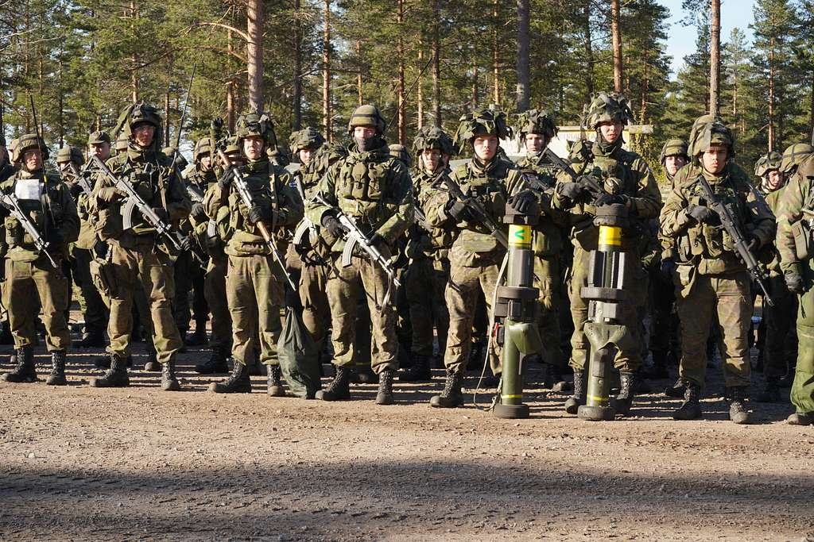
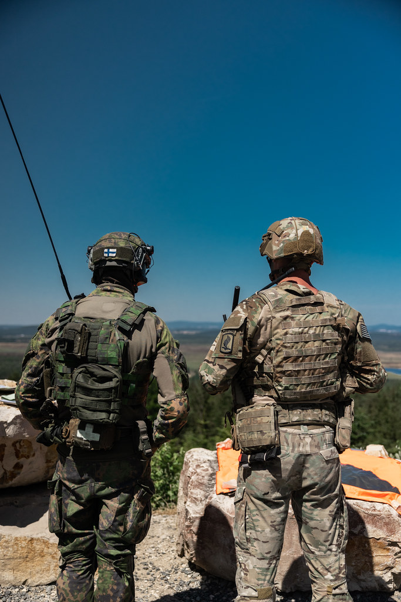

Suomen kansainväliset valmiusjoukot -infopankki
"Varusmiespalveluksen suorittaminen Suomen kansainvälisissä valmiusjoukoissa (SKVJ) avaa ovia maailmalle. Valmiusjoukot koulutetaan vaativiin kansainvälisiin kriisinhallintatehtäviin, ja yli puolet koulutetuista lähtee rauhanturvaajaksi puolentoista vuoden sisällä varusmiespalveluksen päättymisestä."
 https://maavoimat.fi/-/skvj-on-reitti- kriisinhallintatehtaviin-ja-rauhanturvaajaksiEli mitä Suomen kansainväliset valmiusjoukot todella ovat?
Suomen kansainvälinen valmiusjoukko (SKVJ) on Maavoimien erikoisjoukko, joka tähtää korkealaatuisen ja kansainvälisesti yhteensopivan taistelujoukon kouluttamiseen. SKV-joukot koulutetaan ensisijaisesti Suomen sotilaalliseen puolustamiseen, jonka lisäksi joukoissa palvelevat varusmiehet saavat erikoiskoulutuksen sotilaallisiin kriisinhallintatehtäviin 347 päivää kestävän varusmiespalveluksen loppupuoliskolla pidettävällä kansainvälisellä jaksolla. Kaikki koulutukseen valitut suorittavat johtajakoulutuksen aliupseeri- tai reserviupseerikursilla.
 Varusmies 20231. Jääkärikomppania vastaa Suomen kansainvälisen valmiusjoukon koulutuksesta. Valintakokeilla valittava joukko toimii palvelusaikansa toisen vuosipuolikkaan myös Porin prikaatin valmiusyksikkönä. Yksiköt koulutetaan uusimmalle XA-360 AMV tai XA-203 miehistönkuljetusajoneuvokalustolle toimimaan iskuportaan kärkenä hyökkäyksellisisä tehtävissä.
https://maavoimat.fi/-/jaakarikoulutus-porin-prikaatissa-tanaan